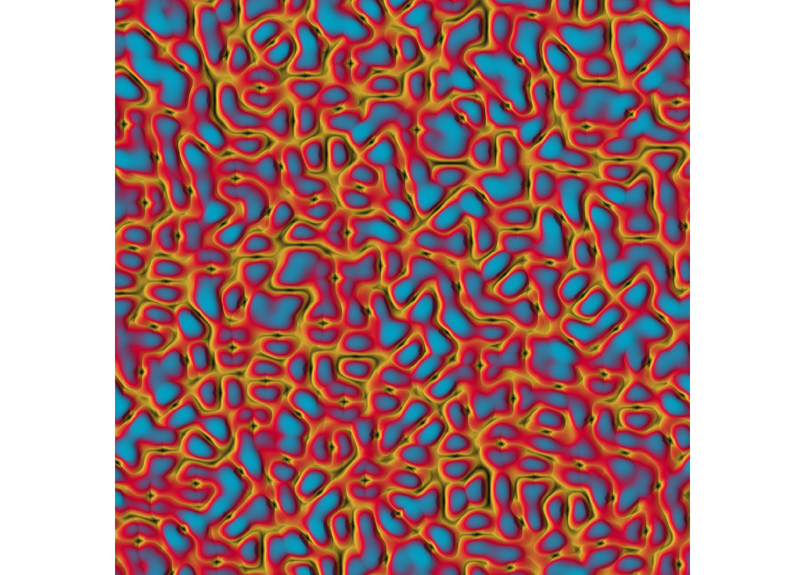

link to forked repository: https://github.com/michelle-shteynberg/ES193DS-generativeart.git
Part 2a. Workshop (structured only)
Introductory exercises
Read and complete exercises from “Get Started” (link). Annotate your code to demonstrate that you know how it works.
1. Exercise 1
library(ggplot2)library(tibble)mpg |>ggplot(aes(displ, hwy, colour = cyl)) +# setting up the aesthetics, color based on cylindergeom_point(show.legend =FALSE, size =6) +# first layer of points, different shades of bluegeom_point(show.legend =FALSE, size =2, colour ="pink2") +# second layer of points, pinkcoord_flip() +# flipping x and y axestheme_void() +# minimal themescale_color_gradient() # adding colors as a gradient
2. Exercise 2
polar_art <-function(seed, n, palette) {# set the state of the random number generatorset.seed(seed)# data frame containing random values for # aesthetics we might want to use in the art dat <-tibble(x0 =runif(n), # random x starting pointy0 =runif(n), # random y starting pointx1 = x0 +runif(n, min =-.2, max = .2), # random end pointsy1 = y0 +runif(n, min =-.2, max = .2),shade =runif(n), # random shadesize =runif(n) # random size )# plot segments in various colours, using # polar coordinates and a gradient palette dat |>ggplot(aes(x = x0,y = y0,xend = x1,yend = y1,colour = shade,size = size )) +geom_segment(show.legend =FALSE) +# plot segmentscoord_polar() +# polar coordinatesscale_y_continuous(expand =c(0, 0)) +# adjust y axisscale_x_continuous(expand =c(0, 0)) +# adjust x axisscale_colour_gradientn(colours = palette) +# use gradient color palettescale_size(range =c(0, 10)) +# set size rangetheme_void() # blank theme}polar_art(seed =4, # random seedn =65, # data pointspalette =c("deeppink4", "navyblue", "darkseagreen"))
polar_art <-function(seed, n, palette) {# set the state of the random number generatorset.seed(seed)# data frame containing random values for # aesthetics we might want to use in the art dat <-tibble(x0 =runif(n), # random x starting pointy0 =runif(n), # random y starting pointx1 = x0 +runif(n, min =-.2, max = .2), # random end pointsy1 = y0 +runif(n, min =-.2, max = .2),shade =runif(n), # random shadesize =runif(n) # random size )# plot segments in various colours, using # polar coordinates and a gradient palette dat |>ggplot(aes(x = x0,y = y0,xend = x1,yend = y1,colour = shade,size = size )) +geom_segment(show.legend =FALSE) +coord_polar() +scale_y_continuous(expand =c(10, 0)) +# adjusted both axesscale_x_continuous(expand =c(0, 10)) +scale_colour_gradientn(colours = palette) +scale_size(range =c(100, 10)) +# changed size rangetheme_void()}polar_art(seed =4, n =65, palette =c("deeppink4", "navyblue", "darkgoldenrod"))
I think that for this exercise, we are naming files with version numbers because they are all very similar and related. We are also using the code in one file to walk us through the code in another, slightly altered file. It allows it to be more accessible in the work that we are doing and it also helps with simplicity and might make it easier to recover a file that was lost.
3. Exercise 3
library(ggthemes)library(scales)# the original function from the first sessionsample_canva <-function(seed =NULL) {if(!is.null(seed)) set.seed(seed)sample(ggthemes::canva_palettes, 1)[[1]] # randomly select palette from ggthemes::canva_palettes, selects one randomly}show_col(sample_canva()) # generate random palette and display colors
sample_named_colours <-function(n) { all_colours <-colours(distinct =TRUE)sample(all_colours, n) # getting all distict colors, sample n colors}polar_art <-function(seed, n, palette) { # function to create polar art plot# set the state of the random number generatorset.seed(seed)# data frame containing random values for # aesthetics we might want to use in the art dat <-tibble(x0 =runif(n),y0 =runif(n),x1 = x0 +runif(n, min =-.2, max = .2),y1 = y0 +runif(n, min =-.2, max = .2),shade =runif(n), size =runif(n) )# plot segments in various colours, using # polar coordinates and a gradient palette dat |>ggplot(aes(x = x0,y = y0,xend = x1,yend = y1,colour = shade,size = size )) +geom_segment(show.legend =FALSE) +coord_polar() +scale_y_continuous(expand =c(0, 0)) +scale_x_continuous(expand =c(0, 0)) +scale_colour_gradientn(colours = palette) +scale_size(range =c(0, 10)) +theme_void()}polar_art(seed =2, # random seedn =50, # random pointpalette =c(sample_named_colours(100)) # palette of sampled colors)
#unlist(ggthemes::canva_palettes) # Unlist the ggthemes::canva_palettes list to get a vector of colors, done to make it easier to sample colors from the palettessample_canva_colors <-function(n) {sample(unlist(ggthemes::canva_palettes), n) # function to sample n colors from the unlisted palettes}polar_art <-function(seed, n, palette) {# create a tibble containing random values for aesthetic dat <-tibble(x0 =runif(n),y0 =runif(n),x1 = x0 +runif(n, min =-.2, max = .2),y1 = y0 +runif(n, min =-.2, max = .2),shade =runif(n), size =runif(n) )# plot segments in various colours, using # polar coordinates and a gradient palette dat |>ggplot(aes(x = x0,y = y0,xend = x1,yend = y1,colour = shade,size = size )) +geom_segment(show.legend =FALSE) +coord_polar() +scale_y_continuous(expand =c(0, 0)) +scale_x_continuous(expand =c(0, 0)) +scale_colour_gradientn(colours = palette) +scale_size(range =c(0, 10)) +theme_void() # see above for annotations}polar_art(seed =2, n =50, palette =c(sample_named_colours(120)) # see above for annotations)
4. Exercise 4
library(dplyr)# function to generate sample datasample_data <-function(seed =NULL, n =200) {if (!is.null(seed)) set.seed(seed)tibble(x0 =runif(n),y0 =runif(n),x1 = x0 +runif(n, min =-.2, max = .2),y1 = y0 +runif(n, min =-.2, max = .2),shade =runif(n), size =runif(n),shape =factor(sample(0:22, size = n, replace =TRUE)) )}# generate sample datadat1 <-sample_data(n =1000, seed =123) dat2 <-sample_data(n =200, seed =456) |>mutate(y0 = .3+ y0 * .8, y1 = .3)# function to create the main plotpolar_styled_plot <-function() {ggplot() +geom_segment(data = dat1 |>mutate(size = size *4),aes(x = x0, y = y0, xend = x1, yend = y1, colour = shade, size = size) ) +# add segments for dat1 with modified sizegeom_segment(data = dat2 |>mutate(size = size /7), aes(x = x0, y = y0, xend = x1, yend = y1),lineend ="round", colour ="white" ) +# add segments for dat2 with modified size and lineendgeom_segment(data = dat2 |>mutate(size = size /30), aes(x = x0, y = y0, xend = x1, yend = y1),lineend ="round", colour ="violetred1" ) +# same as abovegeom_point(data = dat2 |>mutate(size = size *4),aes(x = x0, y = y0),colour ="lavender" ) +# same as abovecoord_polar(clip ="off") +# polar coordinatesscale_y_continuous(expand =c(0, 0),limits =c(0, 1), oob = scales::oob_keep ) +# y axis limitsscale_x_continuous(expand =c(0, 0), limits =c(0, 1), oob = scales::oob_keep ) +# x axis limitsscale_colour_gradientn(colours =sample_canva(seed =3)) +# color gradientscale_size(range =c(0, 10)) +theme_void() +guides(colour =guide_none(),size =guide_none(),fill =guide_none(),shape =guide_none() # remove legends )}# Generate and print the plotplot <-polar_styled_plot()print(plot)
is_within_circle <-function(x_coord, y_coord, x_center, y_center, radius) { (x_coord - x_center)^2+ (y_coord - y_center)^2< radius^2} # takes coordinate vectors as inputs, returns logical vector when coordinates fall within valuesadditive_circles <-function(n =10, pixels =1500, seed =NULL) { # generates n circles at randomif(!is.null(seed)) set.seed(seed)# setup canvas, coordinate columns x and y art <-long_grid(x =seq(0, 1, length.out = pixels),y =seq(0, 1, length.out = pixels) ) art$paint <-0# indicates proportion of circles that each point falls infor(i in1:n) {# sample a random circle x_center <-runif(1, min = .3, max = .7) y_center <-runif(1, min = .3, max = .7) radius <-runif(1, min = .05, max = .25)# add +1 to all points inside the circle art <- art |>mutate(paint = paint +is_within_circle( x, y, x_center, y_center, radius ) ) }# normalise paint to [0, 1] range and return art$paint <-normalise(art$paint)return(art)}circle_art <-additive_circles(seed =300) # generating output from system with seedcircle_array <- circle_art |>as.array(value = paint) # matrix of valuescircle_shadow <-ray_shade( # shadingheightmap = circle_array, # using matrixsunaltitude =23, sunangle =135, # positions of illumination sourcezscale = .01, # specify scale of z-axis, giving circles volumemulticore =TRUE)circle_scape <- circle_array |>height_shade() |># create textureadd_shadow(shadowmap = circle_shadow, # add shadowmax_darken = .1 )tic() # measuring time elapsedplot_map(circle_scape, rotate =180) # draw final image, rotate
toc() # measuring time elapsed between points
1.75 sec elapsed
sample_canva2 <-function(seed =NULL, n =4) { # specifying number of colors, interpolating between colorsif(!is.null(seed)) set.seed(seed)sample(ggthemes::canva_palettes, 1)[[1]] |> (\(x) colorRampPalette(x)(n))() }ridge_art <-function(seed =NULL, pixels =2000) { # uses spatial noise to produce patterns, matrix formif(!is.null(seed)) set.seed(seed)long_grid( # creating grid x =seq(from =0, to =1, length.out = pixels),y =seq(from =0, to =1, length.out = pixels) # defining y and x coordinates ) |>mutate( # modifying datapaint =fracture( # creating a patternx = x, y = y,noise = gen_simplex, # type of noise functionfractal = ridged, # type of fractal patternoctaves =8, # nymber of octaves used in fractal generationfrequency =10, # frequency of fractal patternseed = seed ),paint =normalise(paint) ) |>as.array(value = paint) # converting modified data into array}shaded_ridge_art <-function(seed =NULL) { # shading with height map, shadow map art <-ridge_art(seed) height_shade(heightmap = art,texture =sample_canva2(seed, 256) ) |>add_shadow(shadowmap =ray_shade(heightmap = art, sunaltitude =30, sunangle =90,multicore =TRUE, zscale = .05 ), max_darken = .1 ) |>plot_map()}tic()shaded_ridge_art(124) # choosing color and style

toc()
39.66 sec elapsed
sample_canva2 <-function(seed =NULL, n =4) {if(!is.null(seed)) set.seed(seed)sample(ggthemes::canva_palettes, 1)[[1]] |> (\(x) colorRampPalette(x)(n))() } # see annotations abovetransform_to_curl_space <-function(x, y, frequency =1, octaves =10) {curl_noise( # produce new set of coordinates that we are feeding into other noise processesgenerator = fracture,noise = gen_simplex,fractal = fbm,octaves = octaves,frequency = frequency,x = x,y = y # see annotations above )}define_worley_cells <-function(x, y, frequency =3, octaves =6) { # using worley noise to construct set of cellsfracture(noise = gen_worley,fractal = billow, #using billow fractal styleoctaves = octaves, # number of octaves for fractal generationfrequency = frequency, # frequency of the fractal patternvalue ="cell", # generating cell valuesx = x,y = y # x and y coordinate values ) |>rank() |># rank valuesnormalise() # normalize values}simplex_noise <-function(x, y, frequency = .1, octaves =10) { # same as above, except now using simplex noise to give us an image that is both smooth and jaggedfracture(noise = gen_simplex,fractal = ridged,octaves = octaves,frequency = frequency,x = x,y = y ) |>normalise()}ice_floe <-function(seed) { # generating ice floeset.seed(seed) # setting seed for reproducibility grid <-long_grid(x =seq(0, 1, length.out =2000),y =seq(0, 1, length.out =2000) ) # generating grid of points, x and y axis coords <-transform_to_curl_space(grid$x, grid$y) # transforming grid coordinates to curl space grid |>mutate(cells =define_worley_cells(coords$x, coords$y), # generating worley cellspaint =simplex_noise(x + cells, y + cells), # generating simplex noise with offset by worley cellspaint =normalise(paint) ) |># normalizing noise valuesas.array(value = paint)} # converting modified data into arrayshaded_ice_floe <-function(seed) { art <-ice_floe(seed) # create matrix of elevationsheight_shade(heightmap = art, # shaded elevation maptexture =sample_canva2(seed, 258) ) |>add_shadow(shadowmap =ray_shade( # add shadowsheightmap = art, sunaltitude =50, sunangle =100,multicore =TRUE, zscale = .005 ), max_darken = .06 ) |>plot_map() # create output}tic()shaded_ice_floe(100) # choosing color and style
sample_canva2 <-function(seed =NULL, n =4) {if(!is.null(seed)) set.seed(seed)sample(ggthemes::canva_palettes, 1)[[1]] |> (\(x) colorRampPalette(x)(n))() }choose_rectangle <-function(blocks) {sample(nrow(blocks), 1, prob = blocks$area)} # takes blocks data frame as input and randomly selects a row with probability proportional to blocks$areachoose_break <-function(lower, upper) {round((upper - lower) *runif(1))} # takes lower and upper value as input, makes a break point, outputs always integer valuecreate_rectangles <-function(left, right, bottom, top, value) { # creates tibble for rectangletibble(left = left,right = right,bottom = bottom,top = top,width = right - left,height = top - bottom,area = width * height,value = value )}split_rectangle_x <-function(rectangle, new_value) { # subdividing a rectangle horizontallywith(rectangle, { split <-choose_break(left, right) # for both, determines where break point should be new_left <-c(left, left + split) new_right <-c(left + split, right) new_value <-c(value, new_value) # creates two new rectangles that will replace the oldcreate_rectangles(new_left, new_right, bottom, top, new_value) # used to assign value to 2nd variable })}split_rectangle_y <-function(rectangle, new_value) { # subdividing rectangle verticallywith(rectangle, { split <-choose_break(bottom, top) new_bottom <-c(bottom, bottom + split) new_top <-c(bottom + split, top) new_value <-c(value, new_value)create_rectangles(left, right, new_bottom, new_top, new_value) })}split_rectangle <-function(rectangle, value) { # randomly decides whether to split horizontally or verticallyif(runif(1) < .5) {return(split_rectangle_x(rectangle, value)) }split_rectangle_y(rectangle, value)}split_block <-function(blocks, value) { old <-choose_rectangle(blocks) new <-split_rectangle(blocks[old, ], value)bind_rows(blocks[-old, ], new)} # takes a tibble of one or more rectangles as input, selects one to be subdivided and then splits itsubdivision <-function(ncol =1000, nrow =1000, nsplits =50, seed =NULL) { # continuously splitting the rectanglesif(!is.null(seed)) set.seed(seed) blocks <-create_rectangles( # creating initial rectangles to be splitleft =1, right = ncol, bottom =1, top = nrow, value =0 )reduce(1:nsplits, split_block, .init = blocks) # applying split operation}develop <-function(div, seed =NULL) { # uses geom_rect to draw the rectangles, mapping the value to the fill aesthetic div |>ggplot(aes(xmin = left, xmax = right, ymin = bottom, ymax = top,fill = value )) +geom_rect(colour ="#ffffff", size =3,show.legend =FALSE ) +scale_fill_gradientn(colours =sample_canva2(seed) ) +coord_equal() +theme_void()}pic <-subdivision(nsplits =58, seed =150) |>develop() plot(pic)
sample_canva2 <-function(seed =NULL, n =4) {if(!is.null(seed)) set.seed(seed)sample(ggthemes::canva_palettes, 1)[[1]] |> (\(x) colorRampPalette(x)(n))() }choose_rectangle <-function(blocks) {sample(nrow(blocks), 1, prob = blocks$area)} # takes blocks data frame as input and randomly selects a row with probability proportional to blocks$areachoose_break <-function(lower, upper) {round((upper - lower) *runif(1))} # takes lower and upper value as input, makes a break point, outputs always integer valuecreate_rectangles <-function(left, right, bottom, top, value) { # creates tibble for rectangletibble(left = left,right = right,bottom = bottom,top = top,width = right - left,height = top - bottom,area = width * height,value = value )}split_rectangle_x <-function(rectangle, new_value) { # subdividing a rectangle horizontallywith(rectangle, { split <-choose_break(left, right) # for both, determines where break point should be new_left <-c(left, left + split) new_right <-c(left + split, right) new_value <-c(value, new_value) # creates two new rectangles that will replace the oldcreate_rectangles(new_left, new_right, bottom, top, new_value) # used to assign value to 2nd variable })}split_rectangle_y <-function(rectangle, new_value) { # subdivide rectangle verticallywith(rectangle, { split <-choose_break(bottom, top) new_bottom <-c(bottom, bottom + split) new_top <-c(bottom + split, top) new_value <-c(value, new_value)create_rectangles(left, right, new_bottom, new_top, new_value) })}split_rectangle <-function(rectangle, value) { # random split vertically or horizontallyif(runif(1) < .5) {return(split_rectangle_x(rectangle, value)) } # if random number is less than 0.5, split horizontallysplit_rectangle_y(rectangle, value)} # otherwise, split verticallysplit_block <-function(blocks, value) { # selects one rectangle from set to split old <-choose_rectangle(blocks) # select rectangle new <-split_rectangle(blocks[old, ], value) # split selected rectanglebind_rows(blocks[-old, ], new)} # combine the original set of rectangles with the new split onesubdivision <-function(ncol =1000, nrow =1000, nsplits =50, seed =NULL) { # creates a set of rectangles and then repeatedly splits themif(!is.null(seed)) set.seed(seed) blocks <-create_rectangles(left =1, right = ncol, bottom =1, top = nrow, value =0 ) # generate initial set of rectanglesreduce(1:nsplits, split_block, .init = blocks) # repear splitting}fill_rectangle <-function(left, right, bottom, top, width, height, area, value, nshades =100) { # takes single rectangle as input, divides it into a grid of squares with edge length, and then assigns each of those squares a fill value generated with a randomly sample (below)set.seed(value) # set seed for reproducibility fractals <-list(billow, fbm, ridged) # define a list of fractal functions generators <-list(gen_simplex, gen_perlin, gen_worley) # define a list of noise generatorsexpand_grid(x = left:right, y = bottom:top, ) |># create a grid of coordinates from left to right and bottom to topmutate( # mutate data to add fill columnfill =10* value +fracture(x = x *sample(-3:3, 1),y = y *sample(-3:3, 1), # randomly scale x and y factors between -3 and 3noise =sample(generators, 1)[[1]],fractal =sample(fractals, 1)[[1]], # randomly select noise generator and fractal function from listoctaves =sample(10, 1), # randomly select number of octaves 1-10frequency =sample(10, 1) /20, # randomly select frequency 1-10 and scale it down by 20value ="distance2"# set value parameter to distance 2 ) |>normalise(to =c(1, nshades)) |>round() # round normalized value )}draw_mosaic <-function(dat, palette) { # writing generative art system (mosaica) that uses subdivision to partition a grid into rectangular background <-sample(palette,1)ggplot(aes(x, y, fill = fill), data = dat) +# Specify the aesthetics: x and y coordinates, and fill colorgeom_tile(show.legend =FALSE, colour = background, size = .2) +# create a tile plot without legend, with background color for tile bordersscale_size_identity() +# ensure the size scale is identity (no transformation)scale_colour_gradientn(colours = palette) +# use a gradient scale for color with the specified palettescale_fill_gradientn(colours = palette) +# use a gradient scale for fill with the specified palettescale_x_continuous(expand =expansion(add =5)) +# x axis by adding 5 units on each sidescale_y_continuous(expand =expansion(add =5)) +# y axis by adding 5 units on each sidecoord_equal() +# equal scaling for x and y axestheme_void() +# minimalistic theme with no axis lines or gridlinestheme(plot.background =element_rect(fill = background)) # the plot background color to the randomly selected background color}mosaica <-function(ncol =60, nrow =60, nsplits =30, seed =NULL) { # mosaica function which creates a mosaic plotsubdivision(ncol, nrow, nsplits, seed) |># generate grid of rectangles by splittingpmap_dfr(fill_rectangle) |># apply fill_rectangle to each subdivision and return data frameslice_sample(prop = .995) |>#randomly sample 99.5% of rowsfilter(!is.na(fill)) |>draw_mosaic(palette =sample_canva2(seed)) # draw mosaic using sampled colors}pic <-mosaica(ncol =80, nrow =80, nsplits =50, seed =1100) # generate mosaic plotplot(pic)
library(ggplot2)library(ggforce)library(tibble)# create a tibble with random data for x, y, and valdat <-tibble(x =runif(30), # generate 30 random values for x between 0 and 1y =runif(30), # generate 30 random values for y between 0 and 1val =runif(30) # generate 30 random values for val between 0 and 1)bg_dat <-tibble(x =runif(500, min =-.5, max =1.5), # generate 500 random values for x between -0.5 and 1.5y =runif(500, min =-.5, max =1.5)) # generate 500 random values for y between -0.5 and 1.5pic <-ggplot(dat, aes(x, y, fill = val)) +# create a ggplot object with the main data, setting up the aesthetics and themecoord_equal(xlim =c(-.3, 1.3), ylim =c(-.3, 1.3)) +# set equal scaling for x and y, and define limitsguides(fill =guide_none()) +theme_void() +# remove the legend and add a minimalistic themetheme(panel.background =element_rect(fill ="#222222", colour ="#222222" )) +# set background color to dark greyscale_fill_gradientn(colours =c("purple4", "magenta4", "slateblue"))pic2 <- pic +geom_voronoi_tile(data = bg_dat, # use background data for the first layer of voronoi tilesfill ="deeppink4", radius = .01,expand =-.0025# set fill color, radius, and expand parameter ) +geom_voronoi_tile(colour ="white", max.radius = .2, radius = .02,expand =-.005# set color of tile borders to white, set max radius, radius, and expand parameter for voronoi tiles )plot(pic2)
sample_canva2 <-function(seed =NULL, n =4) { # sampling a color paletter from ggthemes canvaif(!is.null(seed)) set.seed(seed)sample(ggthemes::canva_palettes, 1)[[1]] |> (\(x) colorRampPalette(x)(n))() # create color ramp palette with n colors }unboxy <-function(iterations, layers) { # function to generate set of points using iterations coeffs <-array( # randomly initialize coefficients for transformationsdata =runif(9* layers, min =-1, max =1), dim =c(3, 3, layers) ) point0 <-matrix( # initialize starting pointdata =runif(3, min =-1, max =1), nrow =1,ncol =3 ) funs <-list( # list of additive, sine, and scaled sine transformationsfunction(point) point + (sum(point ^2)) ^ (1/3),function(point) sin(point),function(point) 2*sin(point) )# function to update a point using a randomly selected layer and transformation update <-function(point, t) { l <-sample(layers, 1) # randomly select a layer f <-sample(funs, 1)[[1]] # randomly select a transformation function z <- point[3] # save the third coordinate point[3] <-1# set the third coordinate to 1 point <-f(point %*% coeffs[,,l]) # apply the transformation point[3] <- (point[3] + z) /2# update the third coordinatereturn(point) } points <-accumulate(1:iterations, update, .init = point0) # accumulate the points by iteratively applying the update function points <-matrix(unlist(points), ncol =3, byrow =TRUE) points <-as_tibble(as.data.frame(points)) names(points) <-c("x", "y", "val")return(points)}set.seed(1)dat <-unboxy(iterations =1000, layers =5) # generate data using unboxy functionpic <-ggplot(dat, aes(x, y, fill = val)) +# create initial ggplot object with generated datatheme_void() +# minimalistic themecoord_equal(xlim =c(-2.5, 2.5), ylim =c(-2.5, 2.5)) +# equal scaling, define limitsscale_fill_gradientn(colours =c("lightseagreen", "goldenrod", "slateblue")) +# colorsscale_x_continuous(expand =c(0, 0)) +scale_y_continuous(expand =c(0, 0))pic +geom_voronoi_tile( # round tiles and expand themradius = .01,expand = .01,colour ="#222222",size = .2, show.legend =FALSE )
pic2 <- pic +# add voronoi tiles with specific parametersgeom_voronoi_tile(colour ="#222222",size = .2, show.legend =FALSE )plot(pic2)
sample_canva2 <-function(seed =NULL, n =4) { # sample for color paletteif(!is.null(seed)) set.seed(seed)sample(ggthemes::canva_palettes, 1)[[1]] |> (\(x) colorRampPalette(x)(n))() }unboxy <-function(iterations, layers) { # function to generate set of point using iterations# randomly initialize coefficients for transformations coeffs <-array(data =runif(9* layers, min =-1, max =1), dim =c(3, 3, layers) ) point0 <-matrix(data =runif(3, min =-1, max =1), nrow =1,ncol =3 ) funs <-list( # list of transformative functionsfunction(point) point + (sum(point ^2)) ^ (1/3),function(point) sin(point),function(point) 2*sin(point) )# function to update a point using a randomly selected layer and transformation update <-function(point, t) { l <-sample(layers, 1) # randomly select a layer f <-sample(funs, 1)[[1]] # randomly select a transformation function z <- point[3] # save the third coordinate point[3] <-1# set the third coordinate to 1 point <-f(point %*% coeffs[,,l]) # spply the transformation point[3] <- (point[3] + z) /2# update the third coordinatereturn(point) } points <-accumulate(1:iterations, update, .init = point0) # accumulate points points <-matrix(unlist(points), ncol =3, byrow =TRUE) # convert list of points to a matrix points <-as_tibble(as.data.frame(points)) # convert matrix to a tibblenames(points) <-c("x", "y", "val")return(points)}sift <-function(data) { # modify the points based on their group and tile size data <- data |>group_by(group) |>mutate(tilesize = (max(x) -min(x)) * (max(y) -min(y)), # calculate size of tilex =if_else(tilesize > .02, x, x +rnorm(1)/10), # adjust x coordinate if tile size smally =if_else(tilesize > .02, y, y +rnorm(1)/10) # adjust y coordinate ) |>ungroup()return(data)}shake <-function(data) { data |>group_by(group) |>mutate(x = x +runif(1)/10, # randomly adjust x and yy = y +runif(1)/10 ) |>ungroup()}voronoi_baroque <-function( # create voronoi plot witj various perturbations seed, perturb, max.radius =NULL, radius =0, expand =0, ...) {set.seed(seed)# create a blank ggplot object with specific settings blank <-ggplot(mapping =aes(x, y, fill = val)) +theme_void() +# minimalistic theme with no axis lines or gridlinescoord_equal(xlim =c(-2.75, 2.75), ylim =c(-2.75, 2.75)) +# equal scaling for x and y, and define limitsguides(fill =guide_none(), alpha =guide_none()) +# remove fill and alpha guidesscale_fill_gradientn(colours =sample_canva2(seed)) +# custom color palette for fillscale_alpha_identity() +# Set alpha scale identity (no transformation)scale_x_continuous(expand =c(0, 0)) +scale_y_continuous(expand =c(0, 0)) blank +geom_voronoise( # add voronoi noise to the plot with specified parametersdata =unboxy(iterations =20000, layers =7),perturb = perturb,max.radius = max.radius,radius = radius,expand = expand, ...,show.legend =FALSE# do not show legend )}pic <-voronoi_baroque(67, shake) # create and plot with specific settingsplot(pic)
library(truchet)library(ggplot2)set.seed(123)mosaic <-st_truchet_ms( # generate a truchet mosaic using specified tiles and paramterstiles =c("-", "tn", "+"), # specify the types of tilesp1 =0.2, # scale 1 p2 =0.6, # scale 2p3 =0.2, # scale 3xlim =c(1, 6),ylim =c(1, 6) # x and y axis limits)pic <- mosaic |># create ggplot object with truchet tiles dataggplot(aes(fill = color)) +# fill color aestheticgeom_sf(color =NA, show.legend =FALSE) +# plot mosaic with no border or legendscale_fill_gradientn(colours =c("magenta4", "lightgreen")) +# gradient color scaletheme_void() # minimalistic themeplot(pic)
Creating 3 art pieces
1. Water ridge by ridge, 06/04/24
library(rayshader)library(tibble)library(ambient)library(dplyr)library(ggplot2)library(ggthemes)library(tictoc)library(dplyr)library(png)library(grid)sample_canva2 <-function(seed =NULL, n =6) { # specifying number of colors, interpolating between colorsif(!is.null(seed)) set.seed(seed)sample(ggthemes::canva_palettes, 1)[[1]] |> (\(x) colorRampPalette(x)(n))() }# Define a custom color palette with different shades of blue custom_palette <-c("deepskyblue2", "#99CCFF", "#66B2FF", "#3399FF", "aquamarine3")# Interpolate between the colors to create the desired number of shadessample_canva2(n =5) # Adjust the value of n as desired
ridge_art <-function(seed =NULL, pixels =2500) { # uses spatial noise to produce patterns, matrix formif(!is.null(seed)) set.seed(seed)long_grid( # creating grid x =seq(from =0, to =1, length.out = pixels),y =seq(from =0, to =1, length.out = pixels) # defining y and x coordinates ) |>mutate( # modifying datapaint =fracture( # creating a patternx = x, y = y,noise = gen_simplex, # type of noise functionfractal = ridged, # type of fractal patternoctaves =8, # nymber of octaves used in fractal generationfrequency =10, # frequency of fractal patternseed = seed ),paint =normalise(paint) ) |>as.array(value = paint) # converting modified data into array}shaded_ridge_art <-function(seed =NULL, custom_palette =NULL, file_name ="ridge_art.png") { art <-ridge_art(seed) # shading with height map, shadow map img <-if (!is.null(custom_palette)) { custom_texture <-colorRampPalette(custom_palette)(256)height_shade(heightmap = art,texture = custom_texture ) |>add_shadow(shadowmap =ray_shade(heightmap = art, sunaltitude =30, sunangle =90,multicore =TRUE, zscale = .05 ), max_darken = .1 ) |>plot_map() } else {height_shade(heightmap = art,texture =sample_canva2(seed, 256) ) |>add_shadow(shadowmap =ray_shade(heightmap = art, sunaltitude =30, sunangle =90,multicore =TRUE, zscale = .05 ), max_darken = .1 ) |>plot_map() }# png::writePNG(img, file_name)}tic()shaded_ridge_art(124, custom_palette = custom_palette) # choosing color and style
toc()
50 sec elapsed
# Load the saved image and overlay circles using ggplot2#library(grid)#ridge_img <- rasterGrob(readPNG("ridge_art.png"), width = unit(1, "npc"), height = unit(1, "npc"))# Create random circles data#circle_data <- data.frame(# x = runif(10, min = 0, max = 1),#y = runif(10, min = 0, max = 1),# radius = runif(10, min = 0.05, max = 0.2),# col = sample(c("green", "green3", "green4", "limegreen", "greenyellow", "sandybrown", "saddlebrown", "burlywood", "burlywood4", "brown"), 10)# Plot the image and overlay circles#ggplot() +# annotation_custom(ridge_img, -Inf, Inf, -Inf, Inf) +#geom_point(data = circle_data, aes(x, y, color = col), size = 10, alpha = 0.5) +#scale_color_identity() +#theme_void()# I wanted to add green/brown colored circles as another layer to the top, representing frogs on water. However, I spent about 2 hours on it and it would not run, so I decided to just leave it without it.
I created this piece as an inspiration of the natural environment around us, especially as we live near the ocean. This is an interpretation of the water that we are constantly surrounded by, and what makes up the majority of what we are. Part c, shading tricks, inspired me for this piece, as I immediately saw a body of water in the variety of colors that the part provided me. More specifically I was looking at ridger, shading, and shadowed noise fields, which all helped me create the piece.
2. Blue Gloom, 06/05/24
sample_canva2 <-function(seed =NULL, n =4) { # sampling a color paletter from ggthemes canvaif(!is.null(seed)) set.seed(seed)sample(ggthemes::canva_palettes, 1)[[1]] |> (\(x) colorRampPalette(x)(n))() # create color ramp palette with n colors }unboxy <-function(iterations, layers) { # function to generate set of points using iterations coeffs <-array( # randomly initialize coefficients for transformationsdata =runif(9* layers, min =-1, max =1), dim =c(3, 3, layers) ) point0 <-matrix( # initialize starting pointdata =runif(3, min =-1, max =1), nrow =1,ncol =3 ) funs <-list(function(point) point + (sum(point ^2)) ^ (1/3),function(point) sin(point),function(point) 2*sin(point) ) update <-function(point, t) { l <-sample(layers, 1) f <-sample(funs, 1)[[1]] z <- point[3] point[3] <-1 point <-f(point %*% coeffs[,,l]) point[3] <- (point[3] + z)/2return(point) } points <-accumulate(1:iterations, update, .init = point0) points <-matrix(unlist(points), ncol =3, byrow =TRUE) points <-as_tibble(as.data.frame(points)) names(points) <-c("x", "y", "val")return(points)}set.seed(1)dat <-unboxy(iterations =1000, layers =5) pic <-ggplot(dat, aes(x, y, fill = val)) +theme_void() +coord_equal(xlim =c(-2.5, 2.5), ylim =c(-2.5, 2.5)) +scale_fill_gradientn(colours =c("purple", "navyblue", "slateblue")) +scale_x_continuous(expand =c(0, 0)) +scale_y_continuous(expand =c(0, 0))pic +geom_voronoi_tile(radius = .01,expand = .01,colour ="#222222",size = .2, show.legend =FALSE )
I created this piece inspired by finals week and what I think my brain looks like the last 3 weeks of every quarter. I also think it just looks beautiful with the colors looking like a gemstone. This piece drew from the tiles and tesselations part, using the the Voronoi tiles, which I think were so interesting to look at.
3. My Future Career, 06/05/24
library(truchet)library(ggplot2)set.seed(129)mosaic <-st_truchet_ms( # generate a truchet mosaic using specified tiles and paramterstiles =c("-", "tn", "+", "fnw", "fne"), # specify the types of tilesp1 =0.2, # scale 1 p2 =0.6, # scale 2p3 =0.2, # scale 3xlim =c(1, 6),ylim =c(1, 8) # x and y axis limits)pic <- mosaic |># create ggplot object with truchet tiles dataggplot(aes(fill = color)) +# fill color aestheticgeom_sf(color =NA, show.legend =FALSE) +# plot mosaic with no border or legendscale_fill_gradientn(colours =c("green4", "lightgreen")) +# gradient color scaletheme_void() +# minimalistic themetheme(plot.margin =margin(0, 0, 0, 0) )plot(pic)
It is so hard to explain, but this is what I think would be the visual representation of an environmental planner, which is the career that I want to pursue in the future. It also embodies the colors of the fauna and the trees, relating to the overall idea of environmental awareness. This is also from the tiles and tesselations section, this time using the Truchet mosaic to put all these tiles and pieces together.
Summary
lastly: a 8-10 sentence summary at the end about your process: What was new for you? What was familiar? What did you learn? How did following the exercises/tutorials go for you?
I genuinely learned a lot and enjoyed the process of doing this project. Most of what I learned was new for me, I’ve never really done anything of the sort in R or any other programming language. I didn’t know that we were able to manipulate our data to make something that was a piece of art. I feel as though I have seen pieces of art that resemble what I was doing, but I was always curious as to how one would do it at all in the first place. Using all the new functions and subfunctions was fun to do, and playing around with the project was too. It was cool to see ggplot, and other packages/functions we used in class to visualize biological data, implemented in these artistic projects. Following the exercises and tutorials was extremely helpful in the process, but it still took me a while and I did struggle a bit at some points. It was helpful to use the structured workshop because otherwise, I don’t know if I would have been able to do it well (or at all!).